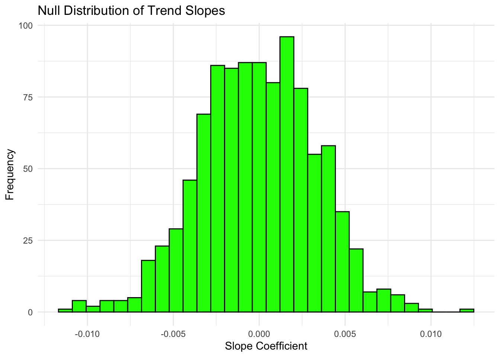

I will conduct a permutation test by simulating behavior under the null hypothesis using the Netflix dataset. This study will explore whether Netflix favors certain genres more than others in its acquisitions. Understanding the patterns in Netflix’s content distribution can provide insights into the platform’s strategic decisions and how they align with viewer preferences and industry trends.
Overview of Process: - I cleaned the data by filtering out missing values, converting dates, and selecting relevant columns - I created a function to calculate the trend in adult-oriented content over time - I used map() to perform a permutation test that shuffles years to determine if the observed trend could happen by chance - I created 3 plots, described below: - Plot 1 - shows the null distribution from the permutation test - Plot 2 - shows the proportion of adult content by year and content type - Plot 3 - shows rating distributions across different time periods
From these tests, we can see different trends over time in the various ratings of content that Netflix provides.
end with a description of what you did (3-4 sentences). That is, use words to guide the reader through your analysis.
The following objects are masked from 'package:stats':
filter, lag
The following objects are masked from 'package:base':
intersect, setdiff, setequal, union
library(ggplot2)library(purrr)library(lubridate)
Attaching package: 'lubridate'
The following objects are masked from 'package:base':
date, intersect, setdiff, union
library(tidyr)netflix
# A tibble: 8,807 × 12
show_id type title director cast country date_added release_year rating
<chr> <chr> <chr> <chr> <chr> <chr> <chr> <dbl> <chr>
1 s1 Movie Dick J… Kirsten… <NA> United… September… 2020 PG-13
2 s2 TV Show Blood … <NA> Ama … South … September… 2021 TV-MA
3 s3 TV Show Gangla… Julien … Sami… <NA> September… 2021 TV-MA
4 s4 TV Show Jailbi… <NA> <NA> <NA> September… 2021 TV-MA
5 s5 TV Show Kota F… <NA> Mayu… India September… 2021 TV-MA
6 s6 TV Show Midnig… Mike Fl… Kate… <NA> September… 2021 TV-MA
7 s7 Movie My Lit… Robert … Vane… <NA> September… 2021 PG
8 s8 Movie Sankofa Haile G… Kofi… United… September… 1993 TV-MA
9 s9 TV Show The Gr… Andy De… Mel … United… September… 2021 TV-14
10 s10 Movie The St… Theodor… Meli… United… September… 2021 PG-13
# ℹ 8,797 more rows
# ℹ 3 more variables: duration <chr>, listed_in <chr>, description <chr>
This dataset was originally posted on Kaggle by @paramvir_705, and is updated monthly; it was originally collected from Netflix. The page doesn’t directly indicate further details, so this is assumedly a random chunk of Netflixs’ catalogs, neglecting country lines/firewalls (according to IPVanish, Netflix owns the rights to over 13, 000 titles when accounting for all coutries where they’re active). This is an important caveat to using this dataset, as it will be difficult to draw conclusions about Netflix’s overall behavior.
The dataset contains about 8,800 rows – each a different TV show or movie in Netflix’s catalog – and 12 columns (show_id, type, title, director, cast, country, date_added, release year, rating, duration, listed_in (basically genre)). Testing these varibles lets us look for patterns in Netflix’s acquisitions, viewer preferences, and reactions to industry trends.
Hypothesising
Research Question: Are ratings correlated with the date content was added to Netflix? That is, can we see changes in Netflix’s acquisition decisions/key audience based on changes in the ratings (e.g. PG, TV-MA, etc.) over added content over time.
null (H0): There is no correlation between a show’s rating and its date added to Netflix. As in, the ratings are consistent over time.
alt (H1): There is a correlation between a show’s rating and its date added to Netflix. As in, the ratings get better or worse over time.
# A tibble: 6 × 3
type rating year_Netflix
<chr> <chr> <dbl>
1 Movie PG-13 2021
2 TV Show TV-MA 2021
3 TV Show TV-MA 2021
4 TV Show TV-MA 2021
5 TV Show TV-MA 2021
6 TV Show TV-MA 2021
This table is just a sneak peek at the cleaned data that I’ll be passing through thr rest of the code.
table(netflix_clean$rating)
66 min 74 min 84 min G NC-17 NR PG PG-13
1 1 1 41 3 79 287 490
R TV-14 TV-G TV-MA TV-PG TV-Y TV-Y7 TV-Y7-FV
799 2157 220 3205 861 306 333 6
UR
3
And here is a peak at the distribution across ratings ## Function - at least 1 function you’ve written - please include all your code used in the analysis (but feel free to use code folding1).
calculate_rating_trend <-function(data, adult_ratings =c("TV-MA", "R", "NC-17")) {# Calculate proportion of adult content by year yearly_proportions <- data %>%mutate(is_adult = rating %in% adult_ratings) %>%group_by(year_Netflix) %>%summarize(adult_prop =mean(is_adult),n =n(),.groups ="drop" ) %>%filter(n >=10) # Only include years with sufficient data# Calculate slope of the trend line (our test statistic)if(nrow(yearly_proportions) <2) {return(NA) } model <-lm(adult_prop ~ year_Netflix, data = yearly_proportions, weights = n)return(coef(model)[2]) # Return the slope coefficient}# Calculate observed statisticobserved_stat <-calculate_rating_trend(netflix_clean)observed_stat
year_Netflix
0.006055784
The function I’ve created calculates the trend in adult-oriented content over time. It first identifies which titles have “adult” ratings (TV-MA, R, NC-17), then calculates the proportion of these ratings for each year. Finally, it fits a weighted linear regression model to determine if there’s a trend over time. The slope coefficient serves as our test statistic - a positive value indicates an increasing trend in adult content, while a negative value suggests a decreasing trend.
map()
set.seed(123)# Number of permutationsn_permutations <-1000# Permutation test using mappermutation_results <-map_dbl(1:n_permutations, function(i) {# Create permuted dataset with shuffled years permuted_data <- netflix_clean %>%mutate(year_Netflix =sample(year_Netflix))# Calculate trend statistic for permuted datacalculate_rating_trend(permuted_data)})# Calculate p-value (two-sided test)p_value <-mean(abs(permutation_results) >=abs(observed_stat), na.rm =TRUE)p_value
[1] 0.063
This code block performs a permutation test by repeatedly shuffling the years in our dataset and recalculating our test statistic. This creates a null distribution of what we might expect to see if there truly was no relationship between ratings and year added. The p-value represents how often we observe a trend as strong as our actual data purely by chance. A low p-value suggests that the observed trend is unlikely to be due to random chance.
Plot
# Plot 1: Adult content proportion by year, faceted by typegraphflix <- netflix_clean |>mutate(adult_ratings = rating %in%c("TV-MA", "R", "NC-17")) |>group_by(year_Netflix, type) |>summarize(adult_mean_prop =mean(adult_ratings), n =n()) |>filter(n >=5)
`summarise()` has grouped output by 'year_Netflix'. You can override using the
`.groups` argument.
graphflix |>ggplot(aes(x = year_Netflix, y = adult_mean_prop, fill = type)) +geom_bar(stat ="identity") +facet_wrap(~ type) +labs(title ="Proportion of Adult-Rated Content on Netflix (TV and Movies) Over Time",subtitle ="Adult ratings include TV-MA, R, and NC-17",x ="Year Added to Netflix",y ="Proportion of Adult Content") +theme_minimal() +theme(legend.position ="bottom")
# Plot 2: Rating distribution over time periods, faceted by typegraphflix_2 <- netflix_clean |>mutate(time_Period =case_when( year_Netflix <2010~"Early (before 2010)", year_Netflix <2015~"Middle (2010-2015)",TRUE~"Recent (2018+)" )) |>group_by(type, time_Period, rating) |>summarize(count =n()) |>group_by(type, time_Period) |>mutate(proportion = count /sum(count)) |>filter(proportion >=0.01)
`summarise()` has grouped output by 'type', 'time_Period'. You can override
using the `.groups` argument.
graphflix_2 |>ggplot(aes(x =reorder(rating, -proportion), y = proportion, fill = time_Period)) +geom_bar(stat ="identity", position ="dodge") +facet_wrap(~ type) +labs(title ="Netflix Content Rating Distribution by Time Period and Type",x ="Content Rating",y ="Proportion",fill ="Time Period" ) +theme(axis.text.x =element_text(angle =45))
# Plot 3: Null distribution from permutation testdata.frame(slope = permutation_results) |>ggplot(aes(x = slope)) +geom_histogram(bins =30, fill ="green", color ="black") +labs(title ="Null Distribution of Trend Slopes",x ="Slope Coefficient",y ="Frequency" ) +theme_minimal()

please include all your code used in the analysis (but feel free to use code folding1).
make sure that all graphs are well-labeled (including x and y axes, title of the graph, and accurate and succinct labels for color and fill).
a description of what insights can be gained from your plot(s)
include a few sentences describing each of your plots or tables. That is, tell the reader what they see when they look at the plot. Your narrative description should be in the text part of the qmd file, not as a comment in an R chunk.
Include a visualization of the original data / variables of interest so that the reader can sense the extent of difference in the original relationship.
generate a (null) sampling distribution to describe the variability of the statistic that was calculated along the way visualize the distribution of the statistics under the null model get p-value to measure the consistency of the observed statistic and the possible values of the statistic under the null model make a conclusion using words that describe the research setting
do not include error or warning messages (see HW YAML for code).